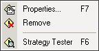
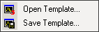
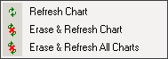
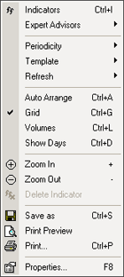

- Indicators - вызов окна управления индикаторами;
- Expert Advisor - появляется меню
более низкого уровня, в котором вы можете изменить настройки
(Properties..), удалить (Remove) или оттестировать на истории (Test Strategy) прикрепленного эксперта:

- Periodicity - выбор временного
промежутка для графика;
- Template - появляется меню более
низкого уровня, в котором вы можете загрузить ранее сохраненный
шаблон графика (настройки и индикаторы) (Open
Template) или сохранить настройки графика в виде шаблона
(Save Template):

- Refresh - появляется меню более
низкого уровня, в котором вы можете как просто обновить график
(Refresh), так и обновить график c
удалением локальной базы котировок (новая база котировок
скачивается с сервера) (Erase &
Refresh):

- Auto Arrange - упорядочить индикаторы
внутри графика;
- Grid - включить/отключить отображение
сетки;
- Volumes - показывать/не показывать
график объема;
- Zoom In - увеличить масштаб графика;
- Zoom Out - уменьшить масштаб графика;
- Delete Indicator - удалить индикатор
(активно только при щелчке мыши на индикаторе, изображенном под
графиком цены);
- Save as - сохранить график на диск в
выбранном формате (*.CSV,*.PRN,*.HTM);
- Print Preview - предварительный
просмотр перед печатью;
- Print - печать графика;
- Properties.. - в зависимости от места
щелчка мыши выводится различные окна:
|
 |